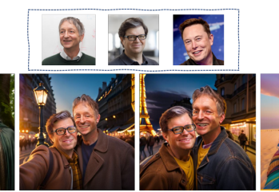
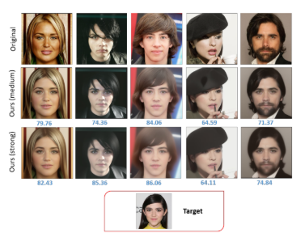
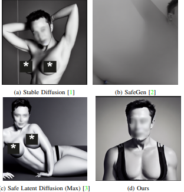

About Me
I am currently completing my MSc in Computer Science at Saarland University, conducting research at the Max Planck Institute for Informatics. My work focuses on generative vision, controlled video and image synthesis, and multimodal learning. I am particularly interested in developing advanced AI systems that can generate realistic visual content while ensuring identity preservation and controllability across multiple modalities.
Selected Publications

Mohamed, S.; Muhammad Hamza, M.; Dabral, R.; Theobalt, C.
Gaussian Masks for Motion Transformers
Under Review at SIGGRAPH Asia 2025.
Gaussian Masks for Motion Transformers
Under Review at SIGGRAPH Asia 2025.

Mohamed, S.; Han, D.; Li, Y.
Fusion is all you need: Face Fusion for Customized Identity-Preserving Image Synthesis
ArXiv Link
Fusion is all you need: Face Fusion for Customized Identity-Preserving Image Synthesis
ArXiv Link

Han, D.*; Mohamed, S.*; Li, Y; Denzler, J.
Diffusion-Based Identity-Preserving Facial Privacy Protection
ICASSP 2025. Paper
Diffusion-Based Identity-Preserving Facial Privacy Protection
ICASSP 2025. Paper

Han, D.*; Mohamed, S.*; Li, Y.
ShieldDiff: Suppressing Sexual Content Generation from Diffusion Models through Reinforcement Learning
Preprints 2024. Preprint Link
ShieldDiff: Suppressing Sexual Content Generation from Diffusion Models through Reinforcement Learning
Preprints 2024. Preprint Link